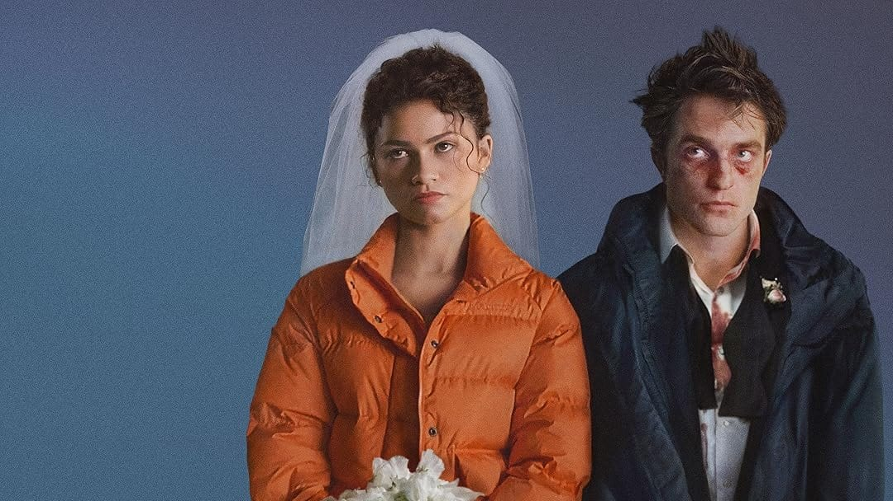
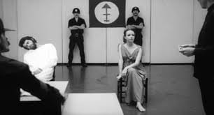
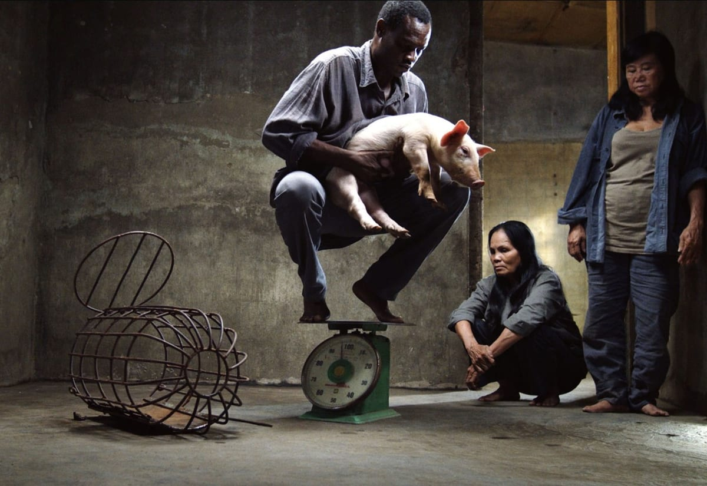

The Drama: Entre romance, desconforto e colapso
Em The Drama, Kristoffer Borgli transforma uma crise afetiva em comédia incômoda, mas a ambição tonal do filme nem sempre encontra unidade entre romance, tensão e colapso emocional.
Textos semanais sobre imagem, processo e construção visual.

Em The Drama, Kristoffer Borgli transforma uma crise afetiva em comédia incômoda, mas a ambição tonal do filme nem sempre encontra unidade entre romance, tensão e colapso emocional.

Em Manhã Cinzenta, Olney São Paulo transforma a repressão política em linguagem cinematográfica. O curta articula alegoria, fragmentação e urgência formal para fazer o espectador sentir o sufocamento de viver sob a ditadura.

Em Perfectly a Strangeness, Alison McAlpine transforma o deserto em campo de tensão entre matéria, percepção e imaginação cósmica.

Em Taste, Lê Bảo organiza a experiência menos pela progressão narrativa do que pela observação dos corpos, do espaço e da repetição.